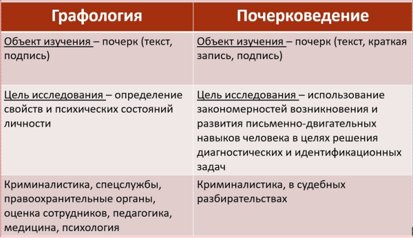

Почерковедение и графология
Сравните объект, цель исследования в почерковедении с графологией
Видно, что объект изучения совпадает, а цели и применение различные

Обычно такие исследования производят для разного рода судебных разбирательств, следственных мероприятий и т.д.

Раздел криминалистики.

Решение диагностических и идентификационных задач, возникающих при расследовании преступлений.
Однако цель исследований и применяемые методы в почерковедении более узкие, чем в графологии.
В почерковедении и в графологии разные понятийные аппараты.
Конечно, в обоих дисциплинах требуется понимание возникновения письма, его определение, развитие письменных навыков с возрастом и пр.
Применяемое в почерковедении понятие письма — это дополнительное к звуковой речи средство общения людей, осуществляемое при помощи различного рода графических знаков, отражающих в определенной форме звуковую речь и служащих для передачи этой речи на расстояние и закрепления ее во времени".
Сравните объект, цель исследования в почерковедении с графологией
Видно, что объект изучения совпадает, а цели и применение различные
Сравните смысл почерковедения и графологии
Видно, что почерковедение психологический портрет личности не раскрывает. Тогда как для графологии психологический портрет личности является основанием для проведения исследований
Такой терминологии уже достаточно для почерковеда, но недостаточно для графолога.
Почерковедение необходимо для проведения судебно-почерковедческой экспертизы.
Предметом судебно-почерковедческой экспертизы является заключение эксперта на основе действующего уголовно-процессуального и гражданско-процессуального законодательства идентификационных, диагностических и ситуационных задач судебно-почерковедческой экспертизы путем применения соответствующих методов исследования в целях установления фактов (фактических обстоятельств), имеющих доказательственное значение по уголовным и гражданским делам.
Если сказать проще, то такие заключения эксперта нужны для установления факта написания текста (подписи) определенным лицом, а также для некоторых диагностических задач, таких как написание под влиянием или под действием каких-то факторов и пр.
Все заключения, полученные по результатам исследований почерковеда строго документированы в рамках имеющихся в России методик.